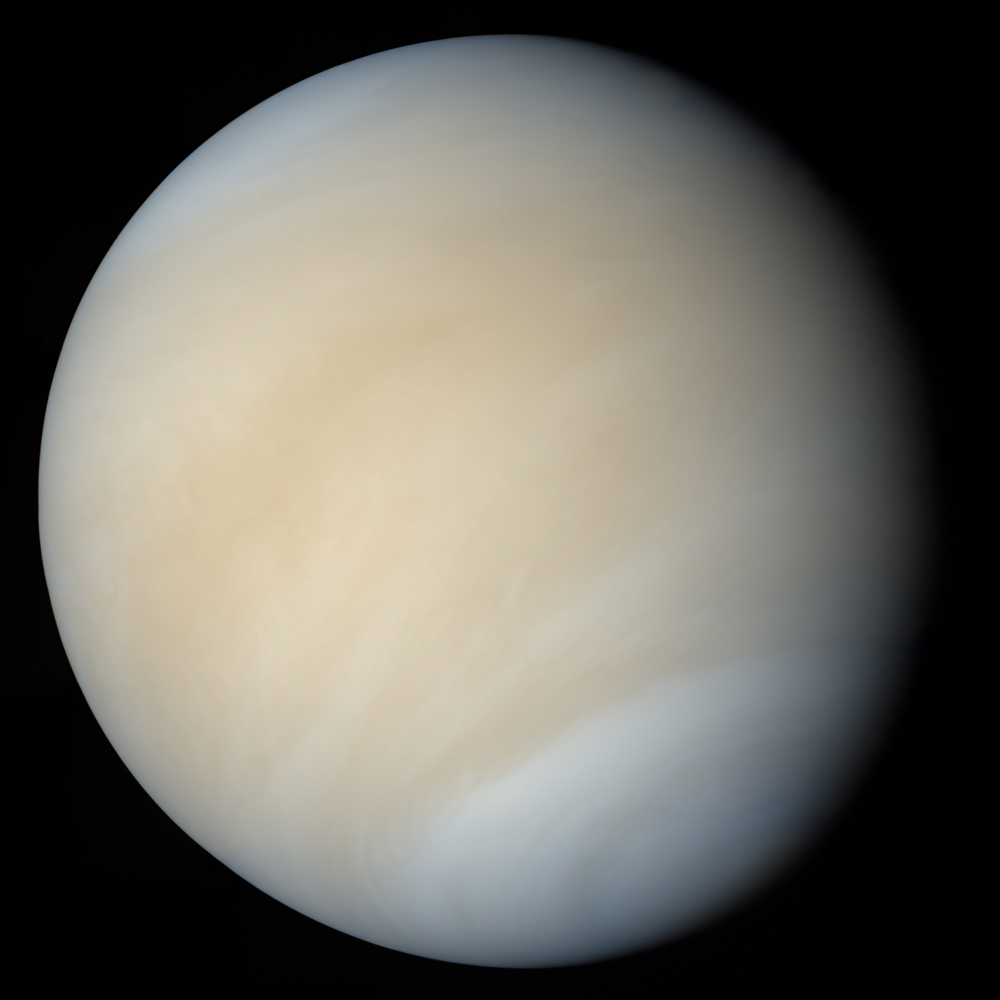

Notable objects in space near the Earth
The Earth orbits a hospitable G-type main sequence star. It is part of a solar system with thousdands of celestial bodies - 8 of which are planets.
These 8 planets are, listed here in ascending order of their average distance from the solar system's sun, are called Mercury, Venus, Earth, Mars, Jupiter, Saturn, Uranus, and Neptune.
Mercury is a rock with diameter 3,032 miles. It has no magnetic field or atmosphere. The humans can see it from Earth and, at some point, named it "Mercury", a god of commerce and merchants.

Venus is a planet with a diameter similar to Earth's and an atmosphere 80 times as dense made of carbon dioxide. This planet also periodically appears in the skys of the Earth and the Humans dubbed it "Venus" after a god of love. At least it's more interesting than shopkeepers.

We're skipping over the Earth here because this entire section of the Hitchhiker's guide is devoted to it. The next planet on our list is Mars, a planet much smaller than earth with a weak atmosphere and no magnetic field.
Mars is a giant, rust flavored desert inhabited by nothing more than human-made robots and a thriving underground civilization of lizard people. Notably, this civilziation was almost discovered because the canals they had built on the surface of the red planet.
Thankfully, they were able to disguise their canals and save themselves from discovery by running a huge propaganda campaign on the Earth that the claim that there were canals on mars was just a huge misunderstanding, and that the original itialian astronomer who documented the canals was trying to write the italian word for "channels" and was not proposing the existence of a canal-building civilization on mars.
They also convinced the population of the Earth that the astronomers who had seen the channels before they were covered up were actually just seeing the veins behind their eye superimposed over the red planet. The combination of these two misinformation campaigns as well as the speedy construction of facades over the canals was enough to convince the humans that Mars really was just a lifeless rusty desert.
Mars is visible from Earth without a telescope and so Early humans had named it after their god of war - presumably because the planet was red, and humans have blood running through them which spills out when they are hurt. In wars many humans get hurt and so the color red is highly visible during those times.

Jupiter is the first gas giant we will be talking about. It's the most massive planet orbiting the Earth's sun, about 318 times as massive as the Earth. The planet has a cloudy surface, is made mostly of hydrogen, has many moons (some of which are big and interesting enough to be considered planets in their own right), and was named after a human god of thunder.